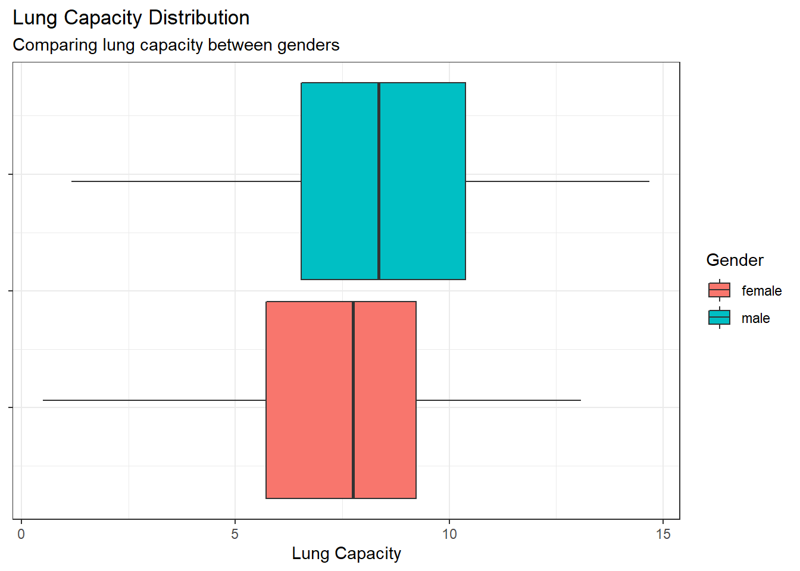
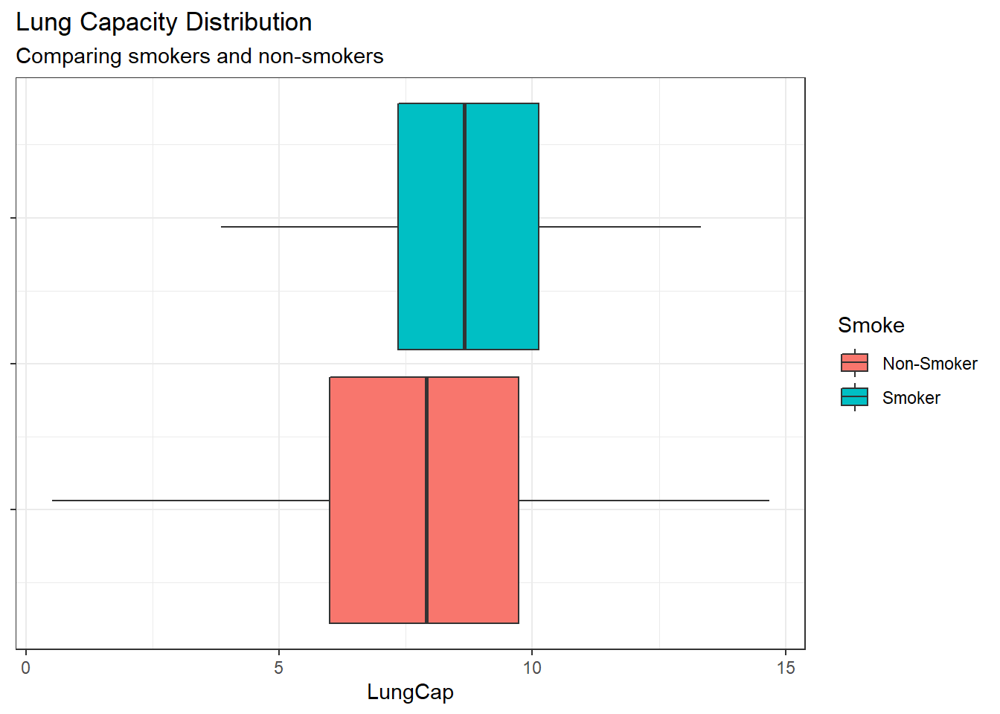
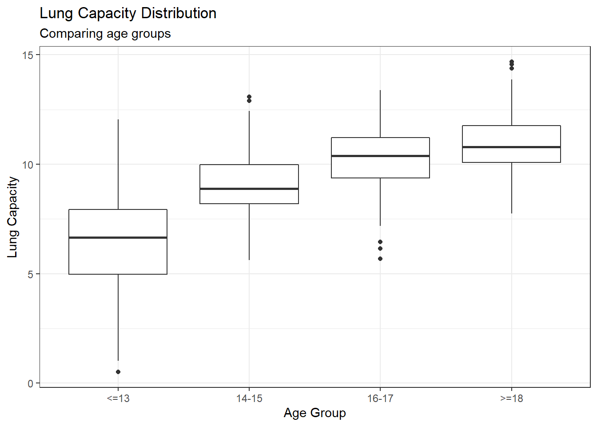
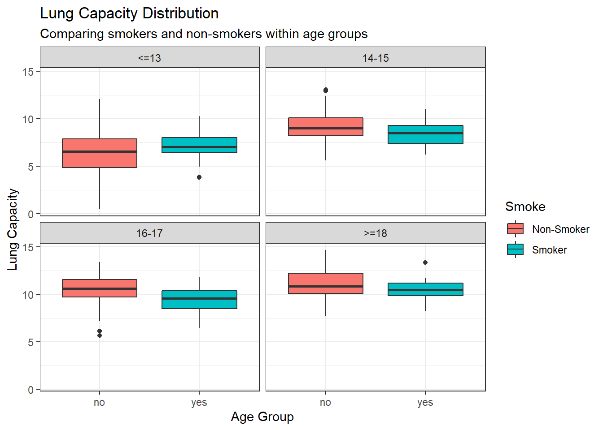

Code
library(dplyr)
library(ggplot2)
library(readxl)
lcdata <- read_xls("_data/LungCapData.xls")First, let’s load our packages and read in the data.
library(dplyr)
library(ggplot2)
library(readxl)
lcdata <- read_xls("_data/LungCapData.xls")What does the distribution of LungCap look like?
lcdata %>%
ggplot(aes(x=LungCap)) +
geom_histogram(bins=45) +
theme_bw() +
labs(x="Lung Capacity", y="Frequency",
title = "Lung Capacity Distribution")
The histogram suggests that the distribution is close to a normal distribution. Most of the observations are close to the mean. Very few observations are close to the margins (0 and 15).
Compare the probability density of the LungCap with respect to Males and Females.
lcdata %>%
ggplot(aes(x=LungCap)) +
geom_boxplot(aes(group=Gender, fill=Gender)) +
theme_bw() +
theme (axis.text.y = element_blank ()) +
labs(x="Lung Capacity", title = "Lung Capacity Distribution",
subtitle = "Comparing lung capacity between genders")
The boxplot comparison indicates that on average males have larger lung capacity, but it also shows that the range and IQR for each gender are similar and have a significant amount of overlap.
Compare the mean lung capacities for smokers and non-smokers. Does it make sense?
lcdata %>%
ggplot(aes(x=LungCap)) +
geom_boxplot(aes(fill=Smoke)) +
scale_fill_discrete(labels=c("Non-Smoker", "Smoker")) +
theme_bw() +
theme (axis.text.y = element_blank ()) +
labs(title="Lung Capacity Distribution",
subtitle = "Comparing smokers and non-smokers")
Comparing the distributions shows that Smokers have a higher mean lung capacity and a significantly smaller range and IQR. This does not make sense intuitively so I would want to investigate the data a bit more to understand the possible reasons.
Examine the relationship between Smoking and Lung Capacity within age groups: “less than or equal to 13”, “14 to 15”, “16 to 17”, and “greater than or equal to 18”.
lc_with_age_groups <- lcdata %>%
mutate(Age_Group = factor(case_when(
Age <= 13 ~ "<=13",
Age %in% c(14,15) ~ "14-15",
Age %in% c(16,17) ~ "16-17",
Age >= 18 ~ ">=18"
),
levels = c("<=13","14-15","16-17",">=18")
)
)
lc_with_age_groups %>%
ggplot(aes(x=Age_Group,y=LungCap)) +
geom_boxplot() +
theme_bw() +
labs(title="Lung Capacity Distribution",
subtitle = "Comparing age groups",
x="Age Group",
y="Lung Capacity")
Comparing age groups shows a consistent and clear increase in lung capacity as ages increase up to and over 18 years old.
Compare the lung capacities for smokers and non-smokers within each age group. Is your answer different from the one in part c? What could possibly be going on here?
lc_with_age_groups %>%
ggplot(aes(x=Smoke, y=LungCap)) +
geom_boxplot(aes(fill=Smoke)) +
scale_fill_discrete(labels=c("Non-Smoker", "Smoker")) +
facet_wrap(~Age_Group) +
theme_bw() +
labs(title="Lung Capacity Distribution",
subtitle = "Comparing smokers and non-smokers within age groups",
x="Age Group",
y="Lung Capacity")
Outside of ages 13 and under all ages groups show higher average, range, and IRQ for non-smokers. It seems likely that the youngest age group, 13 and under, has the largest number of observations of non-smokers which is bringing down the overall average and lower end of the range. This effect is what is causing us to see the higher lung capacity in smokers overall, but we can infer that the causal factor is more likely age than smoking.
Calculate the correlation and covariance between Lung Capacity and Age (use the cov() and cor() functions in R). Interpret your results.
knitr::kable(
lcdata %>% summarise(Covariance = cov(LungCap, Age),
Correlation = cor(LungCap, Age)),
caption = "Relationship between lung capacity and age."
)| Covariance | Correlation |
|---|---|
| 8.738289 | 0.8196749 |
The covariance shows us that the relationship is positive and the correlation coefficient shows us that the relationship is a strong, positive relationship. So the older the people in the data the larger the lung capacity was observed, on average.
Let X = number of prior convictions for prisoners at a state prison at which there are 810 prisoners.
First I will create two data frames of the values provided that will be used to answers the following questions.
prison_data <- data.frame(X=c(0,1,2,3,4), Frequency = c(128, 434, 160, 64, 24))
prison_indi_data <- data.frame(X = c(rep(0,128),rep(1,434),rep(2,160),rep(3,64), rep(4,24)))What is the probability that a randomly selected inmate has exactly 2 prior convictions?
prison_props <- prison_data %>% group_by(X) %>%
summarise(Frequency = Frequency,
Proportion = Frequency / sum(prison_data$Frequency))
knitr::kable(prison_props,
caption="Proportion of Inmates"
)| X | Frequency | Proportion |
|---|---|---|
| 0 | 128 | 0.1580247 |
| 1 | 434 | 0.5358025 |
| 2 | 160 | 0.1975309 |
| 3 | 64 | 0.0790123 |
| 4 | 24 | 0.0296296 |
By calculating the proportion of inmates with each number of prior convictions we can see that the probability of randomly selecting an inmate with 2 prior convictions is 0.1975 or about 19.8%.
What is the probability that a randomly selected inmate has fewer than 2 prior convictions?
print(paste("Probability of fewer than 2 prior convictions:",
sum(filter(prison_props, X < 2)$Proportion)))[1] "Probability of fewer than 2 prior convictions: 0.693827160493827"Summing prisoners with zero and one prior conviction provides us a probability that 0.6938 or about 69.4% chance that a randomly selected inmate would have less than 2 prior convictions.
What is the probability that a randomly selected inmate has 2 or fewer prior convictions?
print(paste("Probability of 2 or fewer prior convictions:",
sum(filter(prison_props, X <=2)$Proportion)))[1] "Probability of 2 or fewer prior convictions: 0.891358024691358"Summing the prisoners with two or fewer prior convictions gives us the probability that 0.89 or about 89% probability that a randomly selected inmate would have two prior convictions or fewer.
What is the probability that a randomly selected inmate has more than two prior convictions?
print(paste("Probability of more than 2 prior convictions:",
sum(filter(prison_props, X > 2)$Proportion)))[1] "Probability of more than 2 prior convictions: 0.108641975308642"The probability found for either 3 or 4 prior convictions (there is no inmate with more than 4 prior convictions) is 0.1084 or about 10.8% probability.
What is the expected value for the number of prior convictions?
print(paste("The expected value for prior convictions:", mean(prison_indi_data$X)))[1] "The expected value for prior convictions: 1.28641975308642"By taking a weighted average or an average of all possible observations to select from the expected value is 1.28642 or about 1.3 prior convictions.
Calculate the variance and standard deviation for Prior Convictions.
knitr::kable(
prison_indi_data %>% summarise(Variance = var(X),
"Standard Deviation" = sd(X)),
caption = "Spread of Inmate Prior Convictions"
)| Variance | Standard Deviation |
|---|---|
| 0.8572937 | 0.9259016 |